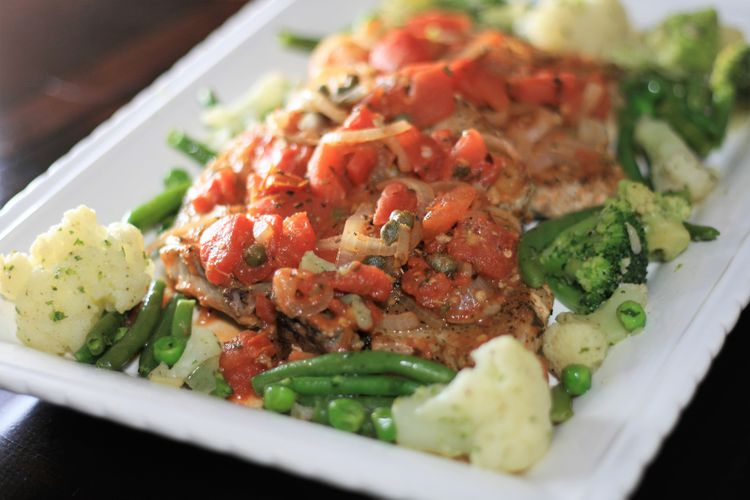

Home
Stewed Tomato Pork Chops

Description
These Italian-style stewed pork chops include lots of onion, garlic, tomatoes, and savory herbs. This quick and easy recipe is a great topping for pasta or smashed potatoes.
Ingredients
- 4 large pork chops
- salt and ground black pepper to taste
- 1 large onions, halved and sliced
- 8 large garlic, minced
- 2 (14.5 ounce) cans whole tomatoes
- 3 tablespoons capers, with liquid
- 1 tablespoon dried rosemary
- 2 teaspoons red pepper flakes
- ½ tablespoon dried oregano
- ½ tablespoon dried basil
Steps
- Heat a large, heavy skillet over medium-high heat. Season pork chops with salt and pepper on both sides and add to the hot skillet. Cook pork chops until browned, about 4 minutes per side. Transfer to a plate and cover with aluminum foil.
- Add onions and garlic to the hot skillet. Cook and stir until softened but still crisp, about 5 minutes. Add tomatoes, capers and liquid, rosemary, red pepper flakes, oregano, and basil. Bring sauce to a simmer and cook until flavors meld, about 5 minutes.
- Pour any accumulated pork juices from the plate into the skillet and stir. Add cooked pork chops and cover with sauce. Simmer until warmed through, about 5 minutes.